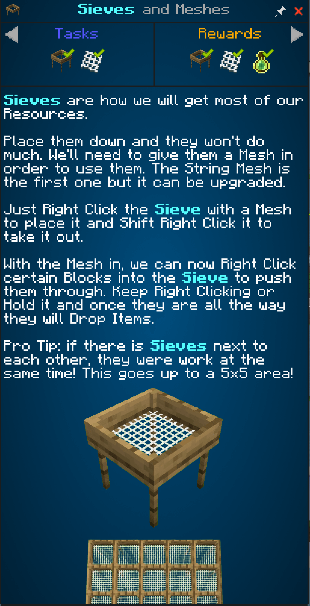
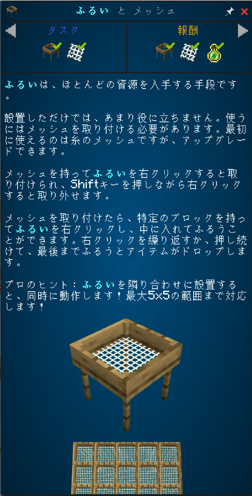

<!doctype html>
<html lang="ja">
<meta charset="utf-8">
<title>クエスト翻訳前後</title>
<style>
html, body { margin: 0; padding: 0; background: #032b40; }
main { display: flex; align-items: flex-start; width: 1600px; }
img { display: block; width: 800px; height: auto; }
</style>
<main>


</main>
</html>
